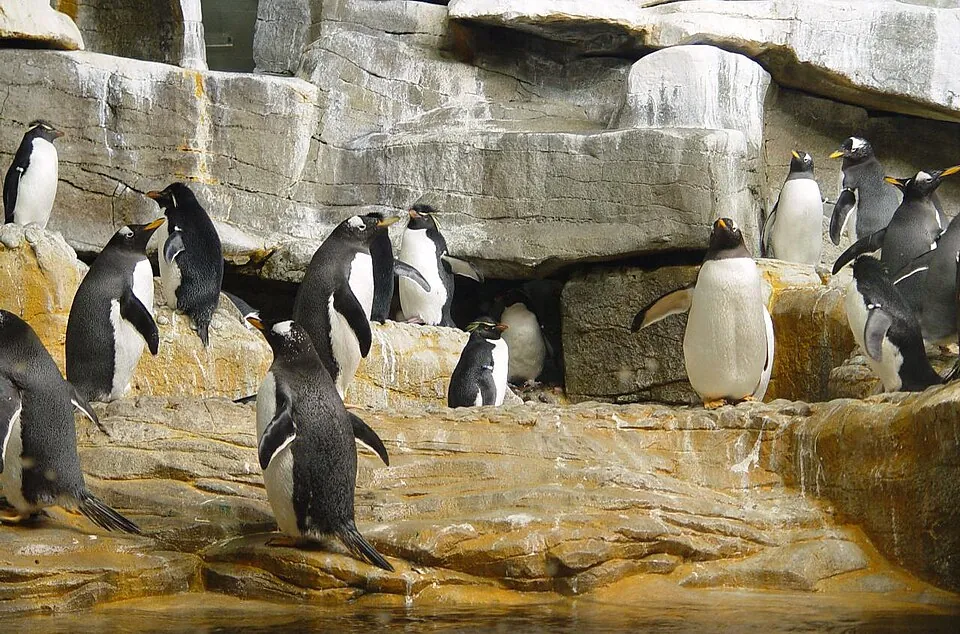

Field Museum
Choose two or three exhibit priorities and treat this as the day's museum, not the first of several.
- Age fit
- School-age, tween, teen
- Time
- 3-5 hrs
- Cost
- From ≈ $120 family of 4
- Area
- Museum Campus
Chicago, Illinois
Researched with AI (Miles Rowan) · sources linked and dated · How we check
Family-of-4 estimate (2 adults, kids 4 and 8; prices read Nov 2, 2026), tickets only: Lincoln Park Zoo free · Art Institute ≈ $64 · Children's Museum ≈ $100.

Coming for the holidays? Christmas in Chicago with kids, free and paid
At a glance: 12 Chicago picks for kids, compared by cost, age, time, area and rain fit.
Free: Lincoln Park Zoo, Millennium and Maggie Daley parks, the lakefront and the Art Institute for kids under 14. The rest cost money; the table shows family-of-4 estimates where prices are published.
3-day starter, kids 4 and 8 (our suggestion; family-of-4 estimate): Day 1 Children's Museum ≈ $100 (closed Tuesday) · Day 2 Lincoln Park Zoo, free · Day 3 Shedd, price varies, check live.
Garfield Park admission checked: October 13, 2026 Other attraction sources checked: July 23, 2026 Ticket prices checked: November 2, 2026
How this guide was built: Family Tripwise compares official attraction information, current city sources, family logistics, and practical planning tradeoffs such as age fit, stroller friction, weather backup, nap timing, and location.
Compare activities
Family of 4 estimate: 2 adults, kids 4 and 8, tickets only, visitor prices read Nov 2, 2026 (Garfield Oct 13). Other labels are editorial estimates, not venue guarantees. Swipe sideways for more.
| Activity | Family of 4 cost | Best ages | Time | Area | Stroller, rain, nap fit | Why go, and what to pair | Booking |
|---|---|---|---|---|---|---|---|
| Field Museum | From ≈ $120 $30 a person; no child price shown; under 3 free | 6+ | 3-5 hrs | Museum Campus | Stroller: Good · Rain: Yes · Nap fit: Medium | Large natural-history anchor. Pair: Lakefront reset | Check tickets/exhibits |
| Shedd Aquarium | Paid: check live No visitor price on official pages Nov 2; varies by date | 2-12 | 2-4 hrs | Museum Campus | Stroller: Good · Rain: Yes · Nap fit: Medium | Focused animal and science day. Pair: Museum Campus lawn | Timed tickets helpful |
| Griffin Museum of Science and Industry | Paid: check live No readable price on the official page Nov 2; parking and add-ons extra | 4+ | 4-6 hrs | Hyde Park | Stroller: Good · Rain: Yes · Nap fit: Low | Hands-on, full-day science choice. Pair: Hyde Park meal | Check add-ons |
| Adler Planetarium | From ≈ $76 From $25 adult, $13 child; child ages not stated; dome show extra | 6+ | 2-4 hrs | Museum Campus | Stroller: Good · Rain: Yes · Nap fit: Medium | Space-led museum choice. Pair: Lakefront view | Check shows |
| Lincoln Park Zoo | Free No general ticket | 0-12 | 2-3 hrs | Lincoln Park | Stroller: Good · Rain: Partial · Nap fit: High | Flexible animal stop. Pair: Nature Boardwalk | No general ticket |
| Millennium Park and Maggie Daley Park | Free Public parks | 2-12 | 1-3 hrs | Loop | Stroller: Good · Rain: No · Nap fit: Medium | City context plus movement. Pair: Art Institute | Check events |
| Chicago Architecture Center river cruise | From ≈ $228 $57 a person; everyone needs a ticket; kids 4 and 8 are under the advised age; 2026 season listed to Nov 22 | 12+ advised by the operator | 90 min | River North | Stroller: Check operator · Rain: Weather-dependent · Nap fit: Low | Chicago story from the river. Pair: Riverwalk meal | Book/check season |
| Chicago Children's Museum | ≈ $100 $25 a person, ages 1+; under 1 free; Illinois residents $21; closed Tuesday | 1-9 | 2-3 hrs | Navy Pier | Stroller: Good · Rain: Yes · Nap fit: High | Hands-on younger-child anchor. Pair: Short lakefront walk | Check entry window |
| Art Institute of Chicago | ≈ $64 $32 adult, under 14 free; some exhibitions extra; residents pay less | 6+ | 90 min-3 hrs | Loop | Stroller: Good · Rain: Yes · Nap fit: Medium | Short art route with family resources. Pair: Millennium Park | Check admission |
| 360 CHICAGO | From ≈ $92 From $27 ages 12+, $19 ages 3-11, tax included; varies by day and time | 6+ | 60-90 min | Magnificent Mile | Stroller: Check venue · Rain: Yes; views vary · Nap fit: Medium | Contained skyline choice. Pair: Streeterville meal | Check visibility/TILT |
| Garfield Park Conservatory | ≈ $25 + age 4 rate $10 adult, $5 ages 7-17; age 4 rate unconfirmed; checked Oct 13; verified Chicago residents free | All ages | 1-2 hrs | Garfield Park | Stroller: Good · Rain: Indoor; closed Monday/Tuesday · Nap fit: High | Calmer greenhouse reset. Pair: Keep the route simple | Entry ticket; separate 30-minute slot if visiting children's garden |
| Chicago lakefront and beach time | Free Public lakefront | All ages | 1-3 hrs | Lakefront | Stroller: Route-specific · Rain: No · Nap fit: High | Flexible outdoor recovery time. Pair: Nearby neighborhood meal | Check season/status |
Planning stance
These lists are designed for realistic family pacing: one main outing, one flexible backup, and enough space for meals, transit, hotel breaks, and kid moods.
Activity filters
Choose two or three exhibit priorities and treat this as the day's museum, not the first of several.
A strong animal and indoor anchor when the family is comfortable with timed tickets and busy galleries.
Hands-on exhibits can fill most of a day; Hyde Park travel and ticketed add-ons make it a deliberate choice.
Best when space or sky shows are the real interest, not merely as a third Museum Campus stop.
Free admission and flexible exits make this one of the easiest choices to shorten around weather or energy.
Use the parks as a first-day orientation or movement break, with the Play Garden strongest for children under 12.
A signature older-kid choice when the family can sit for 90 minutes and plans around weather and departure time.
The clearest family reason to visit Navy Pier, with hands-on play aimed mainly at younger children.
A short family route can work better than a completionist visit; family resources and sensory guidance are available.
A contained skyline choice; treat TILT as an optional add-on and check visibility before committing.
Closed Monday/Tuesday. Entry ticket required; the children's garden has its own 30-minute reservation.
Admission and reservation checks
Keep this flexible and choose the exact beach or path only after checking season, weather, swim status, and facilities.
Choose a trip shape
These are starting routes, not universal rankings. Choose by child interest, age mix, weather, budget, and how much museum time the family actually enjoys.
Use the parks for city context, then choose Field, Shedd or the Art Institute by interest instead of stacking them (the river cruise is advised for 12+).
Both support a shorter day; choose indoor hands-on play or a flexible outdoor animal stop.
Pick one by your child's age and keep the backup nearby instead of rebuilding the whole day.
Let older children choose between city story, art, or skyline rather than defaulting to younger-child pacing.
The Loop, River North, Lincoln Park, Museum Campus routes, and Hyde Park create different reset and transport patterns.
Closed Monday/Tuesday. Conservatory entry needs a ticket; the EMG Children's Garden needs its own 30-minute reservation.
Nonresident rates per person: ages 18-64 $10; ages 7-17 $5; ages 65+ $5. Under-seven rate unconfirmed. Chicago residents need individual residency verification.
| Party | Known-rate subtotal | Still to check |
|---|---|---|
| Two visitors 18-64 + children 7 and 12 | $30.00 | date, fees and garden slot |
| Two visitors 18-64 + children 3 and 7 | $25.00 + unpriced age 3 | Rate for age 3; date, fees and garden slot |
| Two adults + children 3 and 7, all verified Chicago residents | $0.00 | Each person's ZIP/address evidence; date, fees and garden slot |
Published-rate arithmetic, not checkout totals. Garden cost, taxes/fees and dated availability unconfirmed; transport, meals and donations excluded. Admission checked 2026-10-13; other activity facts retain their dates.
High-friction choices
The comparison table covers all 12. These six get extra space because size, timed entry, travel, weather, optional add-ons, or current conditions can materially change the family plan.
The scale and major natural-history exhibits can justify a full family museum block. Best for school-age children through teens who have one or two exhibit interests.
Museum fatigue and the temptation to add Shedd or Adler as another full stop.
Choose priorities before arrival and stop while the experience is still working. Plan the meal and bathroom break inside or immediately after the museum. Check current admission, exhibitions, and family resources.
Pair with outdoor lakefront time, not another full museum.
The animal focus works across a broad age range and provides a substantial indoor anchor. Best for younger children through tweens when crowds and timed entry fit the day.
Busy galleries, ticket timing, and trying to complete every habitat or presentation.
Buy for the intended window and decide the family's highest-interest zones first. Plan food, stroller handling, and the exit before everyone is tired. Recheck current tickets, hours, experiences, and accessibility details.
Pair with one short Museum Campus outdoor reset.
Hands-on exhibits can hold children who prefer machines, experiments, and movement to traditional display cases. Best for preschoolers through teens, with different exhibit priorities by age.
The museum is large, Hyde Park changes the route, and add-on experiences can fragment time and budget.
Treat it as the day's anchor and choose any ticketed add-on before arrival. Build in a real meal and sitting break rather than trying to see every hall. Check current admission, exhibit availability, add-on tickets, and transport.
Pair with a nearby meal or quiet evening.
The 90-minute cruise gives older children a clear Chicago story while the city moves around them. The operator does not recommend it under age 12; best for older kids who can sit and listen for the full trip.
Weather exposure, a fixed departure, infant ticket rules, and a child who loses interest on the boat.
Choose the departure around food and energy, arrive early, and review the operator's current accessibility details. Use bathrooms before boarding and keep the next meal near the Riverwalk. The official season is generally March through November; verify exact dates, tickets, weather policy, and departure point.
Pair with one Riverwalk meal or short walk.
It is a contained skyline stop that can fit between meals or a Magnificent Mile route. Best for school-age children through teens who value the view.
Low visibility, paying for a short visit, or treating optional TILT as part of every ticket.
Check conditions and current ticket choices before committing. Use it as a short viewpoint, not a reason to add multiple observation decks. Verify current hours, visibility, ticket terms, and TILT rules.
Pair with a nearby meal or hotel reset.
Open space can provide the flexible recovery block that museum-heavy trips need. Useful across ages when the exact path or beach fits weather, mobility, and water comfort.
Assuming every beach is equally suitable, open, staffed, swimmable, or easy with a stroller.
Choose the exact location only after checking current Chicago Park District conditions and facilities. Bring the family's needed shade, water, food, and exit plan rather than relying on an unknown beach setup. Check swim season, weather, daily water-quality status, and current beach notices.
Pair with the closest neighborhood meal, not a cross-city attraction.
Plan the cluster
Choose the lodging base before finalizing activities. Museum Campus, Loop, River North, Lincoln Park, and Hyde Park routes create different transit and reset patterns.
Turn one anchor, one flexible reset, meals, and weather backups into a realistic route instead of a museum checklist.
Use the teen guide when architecture, art, food, skyline views, and older-child pacing matter more than younger-child play.
Before locking the day
Timed entry, special exhibits, shows, and add-ons vary. Pick the exact museum first and check its current admission and calendar before treating Museum Campus or Hyde Park as a complete plan.
Field Museum with kids Shedd plan a visit Griffin Museum of Science and Industry
Lincoln Park Zoo has free general admission; Art Institute admission is free for children under 14; Garfield Park Conservatory's current model differs for Chicago residents and other visitors. Recheck before promising a free day.
Lincoln Park Zoo visit Art Institute families Garfield Park Conservatory visit
River cruises, beach swimming, and skyline views change with season and weather. Check the exact cruise, beach dashboard, and visibility near the visit.
Chicago Architecture Center river cruise Chicago Park District beaches Chicago beach swim-status dashboard
Common planning questions
For kids under 6, start with Chicago Children's Museum or Lincoln Park Zoo. By interest: Shedd for aquatic animals, Field for natural history, Griffin MSI for hands-on science, and an architecture cruise or Art Institute for many older children.
Lincoln Park Zoo and the public parks are the clearest free choices. Children under 14 receive free Art Institute admission, while Garfield Park Conservatory has current resident and nonresident rules to verify. Transport, parking, food, and seasonal conditions still affect the day.
Choose one substantial indoor anchor by interest: Shedd, Field, Griffin MSI, Adler, Art Institute, or Chicago Children's Museum. Indoor does not always mean low-crowd or low-walking, so keep the rest of the route light.
Sources checked
Ticket prices read November 2, 2026 (Garfield Park October 13); other official attraction and city sources checked July 23, 2026. Recheck tickets, hours, exhibitions, weather, water conditions, and operating details for the exact visit date.
.jpg){kind=link}